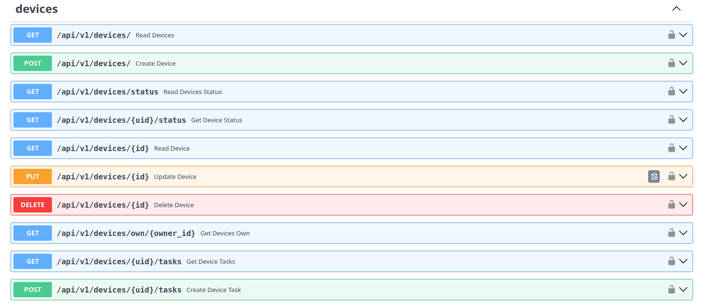
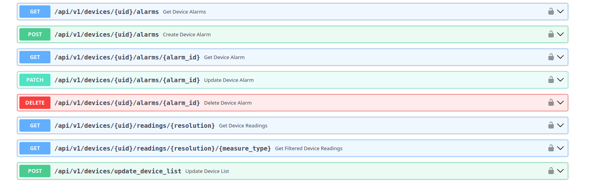

devices¶
Gestión de dispositivos, su estado, sus tareas, sus alarmas y sus lecturas (IoT).

| Método | Ruta | Descripción |
|---|---|---|
| GET | /api/v1/devices/ 🔒 |
Lista los dispositivos. |
| POST | /api/v1/devices/ 🔒 |
Crea un dispositivo. |
| GET | /api/v1/devices/status 🔒 |
Estado de todos los dispositivos. |
| GET | /api/v1/devices/{uid}/status 🔒 |
Estado de un dispositivo concreto. |
| GET | /api/v1/devices/{id} 🔒 |
Consulta un dispositivo por su ID. |
| PUT | /api/v1/devices/{id} 🔒 |
Actualiza un dispositivo. |
| DELETE | /api/v1/devices/{id} 🔒 |
Elimina un dispositivo. |
| GET | /api/v1/devices/own/{owner_id} 🔒 |
Dispositivos de un propietario/organización. |
| GET | /api/v1/devices/{uid}/tasks 🔒 |
Tareas de un dispositivo. |
| POST | /api/v1/devices/{uid}/tasks 🔒 |
Crea una tarea para un dispositivo. |

| Método | Ruta | Descripción |
|---|---|---|
| GET | /api/v1/devices/{uid}/alarms 🔒 |
Lista las alarmas de un dispositivo. |
| POST | /api/v1/devices/{uid}/alarms 🔒 |
Crea una alarma para un dispositivo. |
| GET | /api/v1/devices/{uid}/alarms/{alarm_id} 🔒 |
Consulta una alarma concreta. |
| PATCH | /api/v1/devices/{uid}/alarms/{alarm_id} 🔒 |
Actualiza una alarma. |
| DELETE | /api/v1/devices/{uid}/alarms/{alarm_id} 🔒 |
Elimina una alarma. |
| GET | /api/v1/devices/{uid}/readings/{resolution} 🔒 |
Lecturas de un dispositivo IoT, a la resolución indicada. |
| GET | /api/v1/devices/{uid}/readings/{resolution}/{measure_type} 🔒 |
Lecturas filtradas por tipo de medida. |
| POST | /api/v1/devices/update_device_list 🔒 |
Actualiza el listado de dispositivos (uso por procesos de integración/sincronización). |
🔒 = requiere token de autenticación.
readings: parámetros que no son autoexplicativos¶
resolution y measure_type son texto libre a nivel de API (el schema no impone una lista
cerrada de valores), pero en la práctica solo se usan los siguientes valores:
resolution (granularidad temporal de la lectura):
| Valor | Aplica a |
|---|---|
5min |
Medidores de energía (metering_point) |
60min |
Medidores de energía y sensores de aire (air_sense) |
1day |
Medidores de energía y sensores de aire (air_sense) |
measure_type (qué magnitud se está midiendo), depende del tipo de dispositivo:
| Tipo de dispositivo | measure_type |
Unidad |
|---|---|---|
| Medidor de energía | energy |
Wh |
| Medidor de energía | power |
W |
| Medidor de energía | voltage |
V |
| Medidor de energía | current |
A |
| Medidor de energía | power_factor |
(sin unidad) |
| Medidor de energía | reactive_power |
VAr |
| Sensor de aire | temperature |
°C |
| Sensor de aire | humidity |
% |
| Sensor de aire | light |
lux |
| Sensor de aire | motion |
(sin unidad, presencia) |
Ejemplo: para pedir la energía consumida de un medidor cada hora:
GET /api/v1/devices/{uid}/readings/60min/energy
Nota sobre
/alarms: estos endpoints son los que usa el bloque Configured Alarms de la página Monitor, donde se crean y gestionan las alarmas desde la interfaz. Los listados aparecen vacíos hasta que se cree la primera alarma.
alarms: campos al crear/consultar una alarma¶
Una alarma define una condición a vigilar sobre un dispositivo. Los campos no evidentes:
| Campo | Significado | Valores |
|---|---|---|
source |
Qué dato del dispositivo se vigila | status, error_code, battery_level, reading, maintenance, last_connection |
operator |
Cómo se compara el dato con el valor de referencia | equals, lt (menor que), lte (menor o igual), gt (mayor que), gte (mayor o igual), present, absent |
value |
El valor umbral o de referencia contra el que se compara | Depende de source (por ejemplo, un número si source es battery_level) |
extra |
Parámetros adicionales que necesita esa combinación de source/operator, por ejemplo endpoint_name o measure_type cuando source es reading |
Objeto libre, opcional |
Ejemplo: avisar si la batería baja del 20%:
{"source": "battery_level", "operator": "lt", "value": 20}
category: no coincide 1:1 con lo que ves en el Dashboard¶
El Dashboard agrupa los dispositivos en 3 categorías (Robot, IoT, Sensor), pero el campo
category de la API tiene realmente 4 valores distintos:
category (API) |
Se agrupa en el Dashboard como |
|---|---|
robot |
Robot |
sensor |
Sensor |
meter |
IoT |
hub |
IoT |
Es decir, "IoT" en el Dashboard no es una categoría real de la API, es la suma visual de
meter + hub. Si filtras por category desde código, ten esto en cuenta.
status del dispositivo: no es una lista cerrada, y varía en mayúsculas/minúsculas¶
No hay un enum fijo: cada integración escribe el texto que le llega de la API del fabricante (a veces traducido, a veces no). Valores que puede tomar:
Disconnected, Emergency stop, Ready, Running, Shutting down, charging, idle, offline
Ten en cuenta que unos vienen en mayúscula inicial y otros en minúscula: si construyes lógica comparando este campo, no asumas una única capitalización.
Ejemplo: un dispositivo¶
Respuesta de GET /api/v1/devices/{id} para un robot de limpieza:
{
"id": "11111111-1111-4111-8111-111111111111",
"name": "Robot limpieza 03",
"model": "X100",
"category": "robot",
"description": "Robot de limpieza - planta baja",
"serial_number": "SN-00312",
"mac_address": "AA:BB:CC:00:11:22",
"owner_id": "00000000-0000-4000-8000-000000000001",
"enabled": true
}
Y POST /api/v1/devices/ para dar de alta uno nuevo solo necesita los campos básicos: